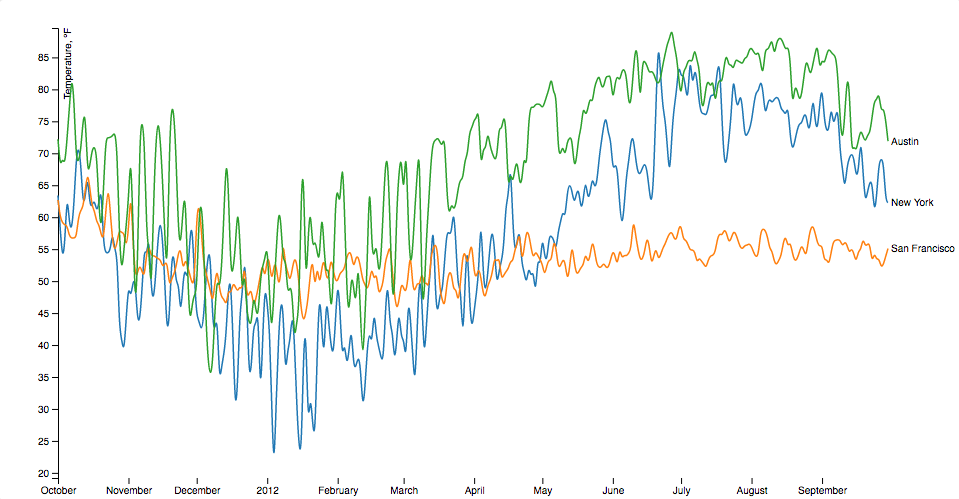
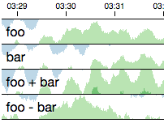
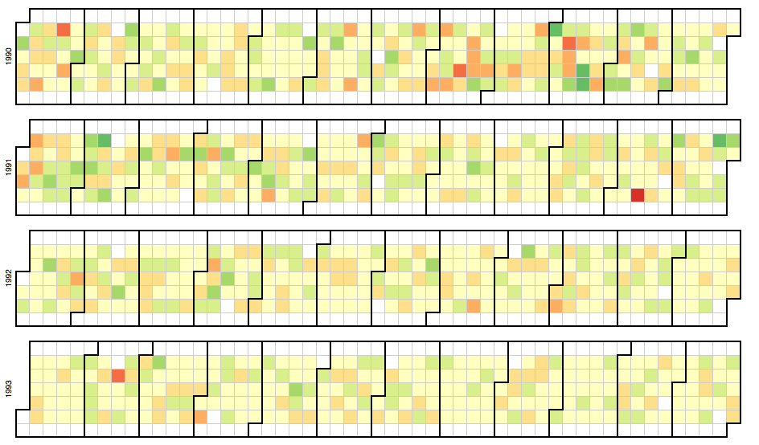

Visualizing Trees and Graphs
John Alexis Guerra Gómez| ja.guerrag[at]uniandes.edu.co| @duto_guerra
Jose Tiberio Hernández | jhernand[at]uniandes.edu.co
Universidad de los Andes
http://johnguerra.co/lectures/visualAnalytics_fall2017/08_Networks_Trees/
Based onslides from Tamara Munzner
Visualizing Networks
Force Directed Layout
http://blockbuilder.org/mbostock/4062045by mbostockUse the force!
Beeswarm plot
http://blockbuilder.org/mbostock/6526445e2b44303eebf21da3b6627320by mbostockCollision Detection
http://blockbuilder.org/mbostock/31ce330646fa8bcb7289ff3b97aab3f5by mbostockForce in a Box
http://blockbuilder.org/john-guerra/14c943d8f198d9f3fef2by john-guerraAdjacency Matrix
https://bost.ocks.org/mike/miserables/Chord Diagram
http://blockbuilder.org/mbostock/1046712by mbostockEdge Bundling
http://blockbuilder.org/mbostock/1044242by mbostockArc Diagram
http://blockbuilder.org/enjoylife/4e435d329c2c743da33eby mbostockArc Diagram
https://bost.ocks.org/mike/hive/Trees
Radial Tree
http://blockbuilder.org/mbostock/2e12b0bd732e7fe4000e2d11ecab0268by mbostockDendogram
http://blockbuilder.org/mbostock/e9ba78a2c1070980d1b530800ce7fa2bby mbostockCluster Dendograms Radial
http://blockbuilder.org/john-guerra/7587ede430bbc18fc2a8b13ab8feafe1by mbostockCluster Dendograms Cartesian
http://blockbuilder.org/mbostock/4063570by mbostockCollapsible Tree
http://blockbuilder.org/john-guerra/32be58cf91f613d45c687095bad39432by mbostockForce Directed Tree
http://blockbuilder.org/mbostock/95aa92e2f4e8345aaa55a4a94d41ce37by mbostockSpace Filling Techniques
TreeMap
http://blockbuilder.org/mbostock/6bbb0a7ff7686b124d80by mbostockTreeMap with parent labels
http://blockbuilder.org/mbostock/911ad09bdead40ec0061by mbostockNewsmap
http://newsmap.jp/Icicle Tree
http://blockbuilder.org/mbostock/1005873by mbostockSunburst Tree
http://blockbuilder.org/mbostock/1306365by mbostockRadial Treemap
http://blockbuilder.org/mbostock/ca5b03a33affa4160321by mbostockKickstarter Projects
http://blockbuilder.org/john-guerra/38b1c32154905828f019f35a026b7526by john-guerraIdiom: Line chart
- Data: Table, many timelines
- Tasks: Compare trends and similarities (with many), locate outliers
- Visual Representation: Line, vertical position, color hue
- Considerations:
- Time usually goes from left to right

Multi-series Line chart
http://blockbuilder.org/mbostock/3884955by mbostockidiom: Horizon charts
- Data: Table, many timelines
- Tasks: Compare trends and similarities (with many), locate outliers
- Visual Representation: Line, vertical position, color luminosity (quant divergent)
- Considerations: Uses much less space

Horizon charts
http://blockbuilder.org/john-guerra/7770baa3383ab777f8ac211deeb66fbcby mbostockCubism
http://square.github.io/cubism/idiom: Calendar view
- Data: Table (years), one timeline
- Tasks: Compare trends (by days of the week, month, year), locate outliers
- Visual Representation: Shape, vertical/horizontal position, color hue
- Considerations: Natural view for humans, focus on common time aggregations

Calendar View
http://blockbuilder.org/mbostock/4063318by mbostockidiom: Radial timelines
- Data: Table (years), one timeline
- Tasks: Compare trends (by days of the week, month, year), locate outliers
- Visual Representation: Line, Radial position, color hue (rainbow :( )
- Considerations: Appeals to cyclic nature of time
Circos.js
http://blockbuilder.org/nicgirault/777c8f74aaf95e46d7e7by nicgirualtStacked Area chart
http://blockbuilder.org/mbostock/3020685by mbostockStacked Radial Area
http://blockbuilder.org/mbostock/3048740by mbostockHCIL work on Temporal events
http://www.cs.umd.edu/hcil/temporalviz/Time searcher
http://www.cs.umd.edu/hcil/timesearcher/Lifelines
http://www.cs.umd.edu/hcil/lifelines/Lifelines
 http://www.cs.umd.edu/hcil/lifelines/
http://www.cs.umd.edu/hcil/lifelines/
Lifelines 2
 http://www.cs.umd.edu/hcil/lifelines2/
http://www.cs.umd.edu/hcil/lifelines2/
Lifelines 2 demo
Lifelines 2 video linkSimilian
 http://www.cs.umd.edu/hcil/similan
http://www.cs.umd.edu/hcil/similan
Similian demo
Similian video linkLifeFlow
 http://www.cs.umd.edu/hcil/lifeflow/
http://www.cs.umd.edu/hcil/lifeflow/
LifeFlow howto
LifeFlow demo
EventFlow
 http://hcil.umd.edu/eventflow/
http://hcil.umd.edu/eventflow/